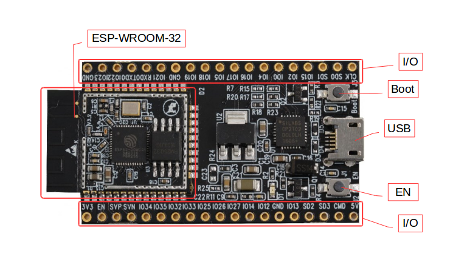
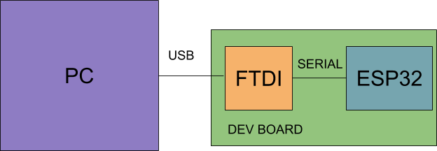
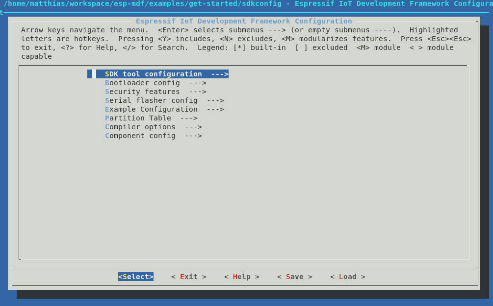
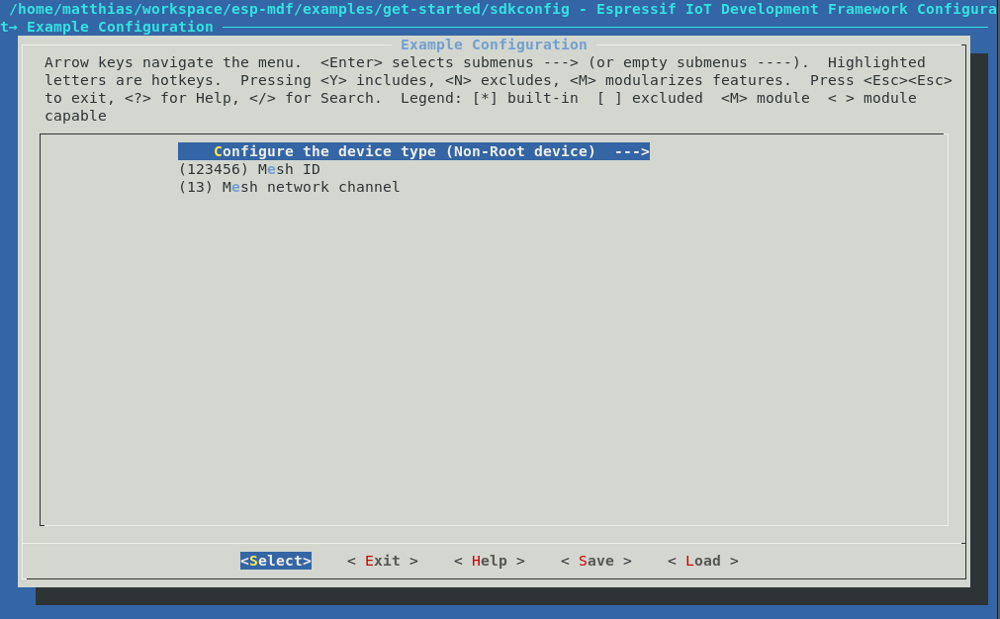

To the first codelab of the Embedded Meetup Group Munich
What's the target audience of this tutorial?
Everybody interested in programming C or C++
No previous coding experience needed, but helpful
What is an ESP32?
The ESP32 is a low cost WiFi Chip

Some basics that you'll also learn in this codelab are:
- Git & Github - learn the basics of source control
This codelab will walk you through the process of setting up the environment to compile and program some example code to an ESP32 and start some own development to extend the functionality of the given sample
What you will build
- A sample application using the ESP32
What you'll learn
- How to build / compile and debug a program for a Microcontroller
- How to program a Microcontroller with your compiled code
- How to create and run a task in a Embedded Device
- How to set up a Mesh Network ESP32 Mesh Development SDK
What you'll need
- A ESP32 development board
- A computer running Linux, Windows, or macOS
- A USB cable to connect the dev board to your computer
- A text editor, or the IDE of your choice
- Basic knowledge of C
This codelab is focused on Embedded Code. Non-relevant concepts and code blocks are glossed over and are provided for you to simply copy and paste.
Setting up the Toolchain
Linux (Ubuntu)
or
wget https://dl.espressif.com/dl/xtensa-esp32-elf-linux64-1.22.0-80-g6c4433a-5.2.0.tar.gzand extract
mkdir -p ~/esp
cd ~/esp
tar -xzf ~/Downloads/xtensa-esp32-elf-linux64-1.22.0-80-g6c4433a-5.2.0.tar.gzor
wget https://dl.espressif.com/dl/xtensa-esp32-elf-linux32-1.22.0-80-g6c4433a-5.2.0.tar.gzand extract
mkdir -p ~/esp
cd ~/esp
tar -xzf ~/Downloads/xtensa-esp32-elf-linux32-1.22.0-80-g6c4433a-5.2.0.tar.gzSet up the build requirements
sudo apt-get install gcc git wget make libncurses-dev flex bison gperf python python-pip python-setuptools python-serial python-cryptography python-future python-pyparsingTo keep the ESP32 makefile system informed about the location of your compiler, you need to export the Compiler Path, you can do it at any time in your open terminal, or add this line to the end of your bashrc at
export PATH="$HOME/esp/xtensa-esp32-elf/bin:$PATH"bashrc file
source ~/.bashrcWindows
Unzip the zip file to C:\ (or some other location, but this guide assumes C:\) and it will create an msys32 directory with a pre-prepared environment.
macOS
Setting up Git
If you have experience with Git and Github already, feel free to jump directly to the next chapter
Linux (Ubuntu)
Install the git package
sudo apt-get install gitSet your git name and email
git config --global user.name "John Doe"
git config --global user.email "john.doe@gmail.com"Getting the Source Code
Checking out the espressif Mesh Development Kit can be done with following command, be sure to add the recursive option, to check out all the submodules. The submodules also contain a specific version of the ESP-IDF, the common
git clone --recursive https://github.com/espressif/esp-mdf.git
export MDF_PATH=~/esp/esp-mdfThe sample project will just use the reference to the ESP-MDF and lives along with this tutorial in:
git clone https://github.com/locomuco/esp32-tutorial.gitConnecting the DEV-BOARD to your PC is done with a plain USB cable, the Dev Board holds a FTDI chip, that provides a serial interface to the ESP32.

Windows COM1 Linux /dev/ttyUSB.. macOS /dev/cu
sudo usermod -a -G dialout $USERThe Firmware in this tutorial will be built in the checked out esp32-tutorial repo you just checked out.
Build and flash the project by running:
Build your firmware using
makeThe esp-idf uses menuconfig to apply different configurations, just have a try and look through the different options.
make menuconfig
Programming
Programming the device can be done with espressif tools esptools
make flashThis should give you similar output to below
esptool.py v2.0-beta2 Flashing binaries to serial port /dev/ttyUSB0 (app at offset 0x10000)... esptool.py v2.0-beta2 Connecting........___ Uploading stub... Running stub... Stub running... Changing baud rate to 921600 Changed. Attaching SPI flash... Configuring flash size... Auto-detected Flash size: 4MB Flash params set to 0x0220 Compressed 11616 bytes to 6695... Wrote 11616 bytes (6695 compressed) at 0x00001000 in 0.1 seconds (effective 920.5 kbit/s)... Hash of data verified. Compressed 408096 bytes to 171625... Wrote 408096 bytes (171625 compressed) at 0x00010000 in 3.9 seconds (effective 847.3 kbit/s)... Hash of data verified. Compressed 3072 bytes to 82... Wrote 3072 bytes (82 compressed) at 0x00008000 in 0.0 seconds (effective 8297.4 kbit/s)... Hash of data verified. Leaving... Hard resetting...
Debugging
The makefile system also provides command line tools for console debugging, using the command below, you can see UART prints from the ESP32 going from the ESP32 over the serial line to your terminal on the connected PC.
make monitorShould give you following output
MONITOR --- idf_monitor on /dev/ttyUSB0 115200 --- --- Quit: Ctrl+] | Menu: Ctrl+T | Help: Ctrl+T followed by Ctrl+H --- ets Jun 8 2016 00:22:57 rst:0x1 (POWERON_RESET),boot:0x13 (SPI_FAST_FLASH_BOOT) ets Jun 8 2016 00:22:57 ...
The programming baudrate can be changed using menuconfig as described in the previous step, see selection below, this speeds up the development cycle by a few seconds

Congrats, you now can do the full compile / program / debug cycle :-)
Hey, what is a thread?
Without an multithreading OS, all commands are executed in a big loop, often referred to the ‘main' loop. When software gets more complex, this approach sometimes cannot fulfill the realtime requirements, since every command is executed sequentially.
Thus you want to set up and execute multiple loops in parallel, and allow them to interrupt each other.
A thread is one of the split out loops containing it's own stack to hold ram content, and it's own priority with respect to the other threads flying around.
OK, how can I create one?
It's pretty simple, just look at the sample below.
static void my_first_thread(void *arg)
{
MDF_LOGI("I'm running");
while(1) {
vTaskDelay(500 / portTICK_RATE_MS);
MDF_LOGI("I'm performing some periodic action");
//add more code here
}
vTaskDelete(NULL);
}Now let's see what it's doing:
MDF_LOGI("I'm running");Just prints you the line in your DEBUG output, you can see it using the ‘make monitor' build command
while(1) {
vTaskDelay(500 / portTICK_RATE_MS);
MDF_LOGI("I'm performing some periodic action");
//add more code here
}In the next step we see the loop performed in the thread, like the main loop, but encapsulated in it's own scope. The action performed is pretty simple, we're using some FreeRTOS primitive ‘vTaskDelay' to block the task for 0,5 seconds, and print something while unblocked, this runs forever...
To create the thread just use the following given FreeRTOS function. It needs:
- The thread function you just created with the previous code snippet
- a generic name, i used the function name
- The size of the stack, reserved for this thread
- Thread parameters (not used in our case)
- A thread priority, that indicates how important this thread is, compared to the other running ones
xTaskCreate(my_first_thread, "my_first_thread", 2 * 1024,
NULL, 5, NULL);Let's look, what we have until now:
- We have checked out the ESP32 Mesh Development Kit
- We have built our first sample from scratch
- We have created our first task, that prints something every 0,5 s
OK, now that we can run a task, we want to blink a LED on our DEV board, below is a rudimentary implementation of the blinking LED task.
Don't forget to create your task as described in the previous step
#include "driver/gpio.h"#define GPIO_LED 2
static int blink_count = 0;
void led_set_blinking(int count)
{
blink_count = count;
}
void led_task(void *pvParameter)
{
int i;
/* set PAD to GPIO mode */
gpio_pad_select_gpio(GPIO_LED);
/* Set the GPIO as a push/pull output */
gpio_set_direction(GPIO_LED, GPIO_MODE_OUTPUT);
MDF_LOGI("LED task is running");
while(1) {
for (i = 0; i < blink_count; i++) {
gpio_set_level(GPIO_LED, 1);
vTaskDelay(100 / portTICK_PERIOD_MS);
gpio_set_level(GPIO_LED, 0);
vTaskDelay(100 / portTICK_PERIOD_MS);
}
vTaskDelay(1000 / portTICK_PERIOD_MS);
}
}The ESP32 mesh architecture consists of a root node, that acts as a gateway to the outside world, you can build this root node, setting the correct option in the menuconfig of the example.
However, we have prepared a node locally already, so you can concentrate on the nodes only.

See below he menuconfig option to switch between the different modes

Now we want to use a given Mesh API, to identify in which layer of the mesh we are located at the moment.
#include "mlink.h"static mdf_err_t led_show_layer(mlink_handle_data_t *handle_data)
{
led_set_blinking(esp_mesh_get_layer());
return MDF_OK;
} /**
* @brief Add a request handler
*/
MDF_ERROR_ASSERT(mlink_set_handle("show_layer", led_show_layer));